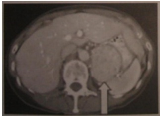

Leia o caso clínico a seguir. Mulher de 35 anos procurou cardiologista para avaliar hipertensão arterial, detectada pela primeira vez no pronto-socorro há poucos dias, quando apresentou quadro de ansiedade associado a cefaleia e sudorese. Durante o exame físico, foram constatados: hipertensão arterial (PA: 175/115 mmHg) com taquicardia (FC: 108 BPM). Em uso de amitriptilina – 75 mg/dia. Feitas hipóteses diagnósticas de feocromocitoma e transtorno de ansiedade. Nesse caso, qual a melhor conduta inicial para confirmação diagnóstica de feocromocitoma?
L.U.C.A, homem, 50 anos, veio à consulta por queixa de cãimbras musculares frequentes, de início há 06 meses. Conta higidez prévia e não fazia uso de medicações. Ao exame físico apresenta-se eutró co, PA=160x100 mmHg, sem outros achados significativos. Exames laboratoriais iniciais mostram hemograma normal. Creatinina: 0,7 mg/dl (n: 0,5-1,3 mg/dl), Sódio: 143 mEq/L (n: 135-145 mEq/L), K+: 2,9 mEq/L (n: 3,5-5 mEq/L), glicemia 118 mg/dl (n:70-99 mg/dl). O diagnóstico mais provável e os exames iniciais indicados são, respectivamente:
Revisar: possível letra faltando em enunciado
Homem, 29 anos, refere ganho de peso progressivo e diagnósticos de hipertensão arterial sistêmica e apneia obstrutiva do sono há 6 meses. Em uso de hidroclorotiazida, anlodipina e enalapril. Exame físico: peso = 79 Kg; estatura = 162 cm; IMC = 30kg/m²; PA = 160 x 100 mmHg; FC = 72 bpm. Demais sem alterações. Exames laboratoriais: Na = 141 mmol/L; K = 2,9 mmol/L; creatinina = 0,9 mg/dL; urina rotina normal; cortisol pós 1 mg de dexametasona = 1,8 mcg/dL (VR < 2); IGF-1 = 150 ng/mL (VR 83-259). Qual é a investigação diagnóstica mais indicada?
Paciente masculino, de 32 anos de idade, negro, com diagnóstico de hipertensão aos 22 anos de idade. Em uso de enalapril 20 mg duas vezes por dia, hidroclorotiazida 25 mg uma vez por dia e anlodipina 10 mg uma vez por dia. Retorna para consulta ambulatorial com exames complementares. Creatinina: 1,0 mg/dL; uréia: 38 mg/dL; sódio: 138 mEq/L; potássio: 3,2 mEq/L; bicarbonato: 32 mEq/L. Ultrassonografia de vias urinárias normal. O diagnóstico mais provável é
(MODIFICADA) Paciente do sexo masculino, raça branca, 35 anos, refere apresentar, há dois anos, quadro de cefaleia, hipertensão arterial, rubor facial, sudorese e palidez cutânea. Há um ano iniciou quadro de arritmia e de hipertensão arterial. Nega etilismo e tabagismo. Nega antecedentes pessoais e familiares patológicos. Ao exame físico: frequência cardíaca de 120 bpm e pressão arterial de 150x100 mmHg, sem outras alterações. Palpação tireoidiana dentro da normalidade. Trouxe exames laboratoriais: hemograma, glicemia, eletrólitos, TSH e função renal dentro da normalidade. Com relação ao caso clínico descrito, caso se confirme feocromocitoma, qual a conduta CORRETA?
Paciente do sexo masculino, raça branca, 35 anos, refere apresentar, há dois anos, quadro de cefaleia, hipertensão arterial, rubor facial, sudorese e palidez cutânea. Há um ano iniciou quadro de arritmia e de hipertensão arterial. Nega etilismo e tabagismo. Nega antecedentes pessoais e familiares patológicos. Ao exame físico: frequência cardíaca de 120 bpm e pressão arterial de 150x100 mmHg, sem outras alterações. Palpação tireoidiana dentro da normalidade. Trouxe exames laboratoriais: hemograma, glicemia, eletrólitos, TSH e função renal dentro da normalidade. Em relação ao quadro descrito, assinale a alternativa CORRETA.
Homem de 55 anos, fumante, previamente hígido em investigação de possível cálculo renal, realiza TC de abdômen que demonstra o achado de massa em adrenal direita de 4,5 cm, densidade de 40 UH e lavagem de contraste de 30%. As dosagens hormonais estavam normais e a pressão arterial não estava elevada. A conduta mais adequada, nesse caso, deve ser indicar:
Paciente de 52 anos com história de hipertensão realizou avaliação laboratorial que demonstrou presença de hipocalemia e aumento da aldosterona livre urinária. Diante desses achados, associados à avaliação tomográ ca e dosagem de aldosterona nas veias adrenais, foi confirmado o diagnóstico de síndrome de Conn secundária à hiperplasia adrenal bilateral. A conduta a ser adotada, preferencialmente, é:
Revisar: possível letra faltando em enunciado
Homem de 21 anos apresenta hipertensão arterial de início recente e de difícil controle. Na história pregressa, houve episódios de fraqueza muscular generalizada de padrão proximal, além de dosagem elevada de enzimas musculares (CPK e aldolase). O eletrocardiograma evidencia achatamento da onda T e presença de onda U. Nesse caso, a principal hipótese diagnóstica é de:
A indicação de ressecção cirúrgica para incidentalomas adrenais considera um conjunto de características de imagem que tornam o mesmo suspeito de malignidade. Em relação ao tamanho estimado em exame de ressonância magnética indica-se
Assinale a alternativa INCORRETA com relação aos cuidados perioperatórios em pacientes com feocromocitoma:
Durante a avaliação diagnóstica de um incidentaloma suprarrenal, podem ser realizados os seguintes exames, com exceção de:
Leia o caso clínico a seguir. Paciente de 24 anos, do sexo masculino, apresentando febre, sudorese e palpitações. Ao exame físico, a pressão arterial encontra-se em 180/110 mmHg. Que exame poderia auxiliar fortemente no seu diagnóstico?
Sobre o Feocromocitoma, assinale a alternativa INCORRETA:
J.P., sexo masculino, 19 anos, estudante de Arquitetura, morador no interior do Estado, vem à consulta acompanhado de sua mãe, referenciados ao ambulatório de cardiologia do HUJM para investigação diagnóstica, pois há 20 dias teve um quadro de dor torácica compatível com síndrome coronariana aguda, sem alterações eletrocardiográ cas de supradesnivelamento do segmento ST, mas com inversão da onda T em derivações precordiais. Enzimas cardíacas alteradas. Foi submetido ao cateterismo cardíaco que não evidenciou lesões obstrutivas nas artérias coronárias. Mãe relatou que o lho é hipertenso desde os 15 anos de idade quando "ele cou muito aborrecido com a separação dos pais". Iniciou também quadro de cefaleias constantes, palpitações e sudorese profusa e foi diagnosticado pelo médico do postinho como "transtorno de ansiedade e depressão pós-traumática". Faz uso regular de losartana 50 mg 12/12h, hidroclorotiazida 25 mg ao acordar e uoxetina 25 mg pela manhã. A rmou que o lho sempre teve "pressão alta emocional", sendo o normal pressório para ele de PA 160/100 mmHg. Considerando o caso clínico, assinale a afirmativa correta.
Revisar: possível letra faltando em enunciado
Qual a causa mais comum de hiperaldosteronismo primário :
Homem de 32 anos de idade queixa-se de dor torácica e refere ter a sensação de morte iminente que se relaciona com crises hipertensivas com altos níveis de pressões sistólicas e diastólicas, além de intensa taquicardia e cefaleia. Relata que o exercício físico desencadeia estes picos pressóricos. Ao exame físico, encontra-se algo ruborescido, com dor à palpação das panturrilhas, sem massas palpáveis no abdômen, sem linfadenomegalias cervicais, axilares ou inguinais. Exames complementares mostram hemograma, glicemia, uremia, creatinemia e eletrólitos dentro da normalidade, assim como uma telerradiografia do tórax em PA e Perfil. A hipótese diagnóstica e conduta propedêutica são, respectivamente:
Assinale a alternativa verdadeira quanto aos feocromocitomas:
Hipertensão arterial severa, resistente a tratamento, com fraqueza muscular, poliúria e polidipsia em paciente com hipocalemia sem uso de diuréticos ocorre em:
Paciente com hiperaldosteronismo primário apresenta:
Você está fazendo uma consulta pré operatória numa mulher de 35 anos com feocromocitoma de 5cm na adrenal esquerda. Ela foi classificada como ASA III (P3). Todos os exames pré operatórios solicitados para o risco cirúrgico estão normais. Sua pressão arterial está 130 x 90 mmHg com uso de fenoxibenzamina 200mg, duas vezes ao dia, já há 3 semanas. Ela também tem recebido implementos de hidratação. Sua frequência cardíaca está em 140 batimentos por minuto. O que fazer?
Paciente de 31 anos queixa-se de cefaleia crônica e fraqueza muscular generalizada, não tendo passado de doença digna de nota e não faz uso regular de medicamentos nem de anticoncepcionais. Ao exame físico, chama atenção a pressão arterial repetidamente elevada (em torno de 180 x 90 mmHg) e frequentes Extrassístoles (ES). Sua fundoscopia revela retinopatia hipertensiva grau I. Na consulta de seguimento, a paciente mantém níveis tensionais elevados. O eletrocardiograma revela frequentes ES supraventriculares, diminuição da amplitude da onda T difusamente e presença de onda U. Outros exames complementares são solicitados, tendo glicemia e hemograma normais, mas dosagens séricas de eletrólitos pendentes. Considerando-se que sua hipertensão arterial sistêmica tenha causa secundária, diante do contexto clínico relatado, um resultado esperado de sua investigação diagnóstica é:
Paciente adulto jovem, com diagnóstico prévio de hipertensão primária procurou atendimento médico devido à queixa de taquicardia, cefaleia e sudorese. Tendo em vista não ter melhorado com o anti-hipertensivo prescrito no posto de saúde, insistiu em nova consulta médica onde foi realizada ultrassonografia com achado de tumoração em adrenal esquerda. Na suspeita de feocromocitoma a conduta é
Paciente do sexo masculino, 64 anos, hipertenso e diabético de longa data, PO tardio de revascularização miocárdica, miocardiopatia isquêmica com fração de ejeção discretamente reduzida, insu ciência renal crônica ainda sem terapia dialítica e proteinúria de 6 g em 24h. Faz uso de losartan 100 mg/dia, bisoprolol 10 mg/dia, AAS 100 mg dia, furosemida 40 mg/dia, rosuvastatina 20 mg/dia, mononitrato de isossorbida 40 mg/dia, trimetazidina 70 mg/dia e reposição oral de potássio. Internado no CTI por piora da dispneia com BNP bastante elevado; Creatina = 3,6; Ureia = 190; alcalose metabólica e potássio = 2,1.
Paciente do sexo feminino, 20 anos de idade, relata que, há três semanas, está com hipertensão refratária a terapêutica medicamentosa otimizada. Refere que apresenta cansaço extremo durante o dia, além de palpitações, cefaleia e sudorese. No momento da consulta, sua pressão é de 160 x 100 mmHg. Foram solicitados catecolaminas urinárias que apresentaram valor acima da normalidade. Considerando esse caso clínico, julgue o item a seguir: Pode haver hiperglicemia no pós-operatório do feocromocitoma entre 24 e 48 horas.
Durante a primeira metade do século XX, a taxa de mortalidade perioperatória, no tratamento do feocromocitoma, variava de 26 a 50%. Atualmente, a taxa de mortalidade em centros especializados é de aproximadamente 1%. Essa melhoria drástica pode ser creditada, principalmente, aos avanços na farmacologia, siologia, anestesia e cuidados perioperatórios. Sobre esses aspectos, aponte a alternativa INCORRETA.
A.D.G., 25 anos, procura serviço especializado com história de hipertensão arterial (PA = 180 x 106 mmHg); Ur = 30 mg/dl; Cr = 0,8 mg/dl; K+ = 2,8 mEq/L; pulsos pediosos palpáveis; B4. Com os dados acima é possível afirmar:
Homem de 55 anos, com hipertensão arterial sistêmica (HAS) e em uso regular de quatro anti-hipertensivos, apresenta fraqueza, parestesia, cãibras musculares e hipocalemia. A hipótese diagnóstica para esse quadro é síndrome de:
No que se refere à abordagem do incidentaloma de suprarrenal, afirma-se: I. Está formalmente indicada a aspiração com agulha fina ou a biópsia orientada por tomografia computadorizada. II. Tem como etiologia mais comum os adenomas não funcionantes. III. Deve ser tratado cirurgicamente, independentemente do seu tamanho. Está/Estão correta(s) a(s) afirmativa(s):
Uma mulher de 32 anos, negra, lha de pais hipertensos e previamente hígida, procurou algumas vezes uma Unidade Básica de Saúde de uma pequena comunidade rural por apresentar, nos últimos 7 meses, fraqueza muscular e dispnéia aos esforços. O único dado relevante do exame físico foi a pressão arterial variando de 160 x 100 mmHg a 170 x110 mmHg. Os exames mostraram hemoglobina de 13 g/dL, glicemia de 85 mg/dL, creatinina de 0,9 mg/dL, sódio de 137 mEq/L, potássio de 2,3 mEq/L, colesterol de 190 mg/dL, triglicérides de 200 mg/dL e sedimento urinário normal. A repetição da dosagem dos eletrólitos confirmou os resultados. A conduta mais adequada neste momento é:
Homem de 45 anos foi submetido à adrenalectomia à direita devido a tumor não funcionante de 7 cm. O histopatológico evidenciou adenocarcinoma metastático. Os sítios primários mais prováveis da referida metástase são:
Paciente de 20 anos apresenta hipertensão arterial de difícil controle. Em sendo considerada a hipótese de hiperaldosteronismo primário, a sequência inicial de investigação será:
Paciente de 24 anos apresenta hipertensão arterial de difícil controle associado a palpitações e sudorese profusa, cefaleia intensa recorrente com alterações visuais. Refere também tremores de extremidades, tonturas, náuseas, desconforto abdominal e eventualmente diarréia. Há hiperglicemia. O diagnóstico a ser considerado é:
Paciente do sexo feminino, 20 anos de idade, relata que, há três semanas, está com hipertensão refratária à terapêutica medicamentosa otimizada. Refere que apresenta cansaço extremo durante o dia, além de palpitações, cefaleia e sudorese. No momento da consulta, sua pressão é de 160 x 100 mmHg. Foram solicitados catecolaminas urinárias que apresentaram valor acima da normalidade. Considerando esse caso clínico, julgue o item a seguir. Feocromocitoma associado à neoplasia endócrina múltipla 2A tem relação com carcinoma medular de tireoide.
No Hiperaldosteronismo Primário ocorre a liberação desregulada de aldosterona, de uma ou ambas glândulas adrenais. Indique a alternativa INCORRETA.
A Doença de Von Recklinghausen (Neurofibromatose tipo 1) pode estar associada a/ao
O radiofármaco útil para a localização de feocromocitomas, em especial quando os tumores são múltiplos, extrassuprarrenais, recidivantes ou metastáticos, é:
Identifique a situação médica não correlacionada a um estado de hiperaldosteronismo secundário:
No que se refere ao câncer de esôfago, cirrose e doença de Crohn, julgue o item subsecutivo. Se a ressonância magnética de abdome revelar a presença de nódulo sólido homogêneo de 3 centímetros de diâmetro na glândula suprarrenal esquerda, existe indicação de adrenalectomia, mesmo na ausência de produção hormonal associada.
Homem, 26 anos, com hipertensão arterial de difícil controle há 4 anos, em uso regular de nifedipina e captopril, refere fraqueza muscular generalizada. Nega antecedentes mórbidos e utilização de outros medicamentos. Pressão arterial 150 x 95 mmHg, fundo de olho com arteríolas em os de cobre, papilas nítidas. Ausculta cardíaca com hiperfonese de B2. Creatinina sérica de 1.2 mg/dL, potássio sérico 2.7 mEq/L, exame de urina normal, hemograma normal. Ultrassonogra a abdominal com rins normais, simétricos. Qual a provável causa da hipertensão arterial?
Paciente masculino, 59 anos, portador de nódulo tireoidiano localizado no polo superior do lobo direito do mesmo lobo. Hipertenso controlado, porém na indução anestésica apresentou crise hipertensiva grave com arritmia cardíaca. Suspensa a cirurgia para melhor preparo do paciente. Se você suspeitasse de uma síndrome endócrina, solicitaria o seguinte exame e indicaria a seguinte cirurgia:
Durante investigação de dor lombar em paciente do sexo masculino, de 65 anos, foi solicitada Tomogra a Computadorizada (TC) de abdome. Evidenciado nódulo de 2,5 cm em adrenal direita. Foi solicitada nova TC com protocolo para adrenais, que confirmou tamanho da lesão. Qual das seguintes características do fenótipo da imagem sugere malignidade?
Homem de 65 anos, em uma consulta de rotina, descobre, na tomogra a de abdome, um nódulo de adrenal de 1,8 x 1,2 cm. O paciente é hipertenso há 5 anos. Todas as alternativas abaixo apresentam exames de screening para um adenoma funcionante de adrenal, EXCETO:
Com relação aos feocromocitomas, é incorreto afirmar:
Em um quadro de hiperaldosteronismo primário deve-se observar:
Todas as afirmativas relacionadas a massas suprarrenais assintomáticas (incidentalomas) são verdadeiras, exceto:
Paciente com forte suspeita de feocromocitoma. Qual o teste de screening mais con ável e que apresenta maior sensibilidade diagnóstica?
Em relação ao aldosteronismo, pode-se afirmar que:
Homem de 27 anos foi trazido à emergência por quadro de síncope, náuseas, dor abdominal e sudorese intensa. Já haviam ocorrido episódios semelhantes, atribuídos a ataques de pânico. A ultrassonogra a de abdome revelou alterações na loja adrenal esquerda. A tomografia computadorizada de abdome está reproduzida abaixo. A investigação deve ser iniciada por:

Jovem de 23 anos queixa-se de excesso de pelos em região facial, e, à ectoscopia, nota-se hirsutismo moderado. Dosagens hormonais revelam testosterona e 17-alfa- hidroxiprogesterona em níveis normais, porém o S-DHEA (sulfato de deidroepiandrosterona) estava bastante elevado. A principal hipótese diagnóstica é:
Qual dos tumores da adrenal se apresenta clinicamente por: cefaleia, sudorese, palpitações e hipertensão arterial de difícil controle assim como estudo de imagem por Ressonância Magnética do Abdome demonstrando nódulo tumoral com hipersinal em T2? Respostas: 1 12 23 34 45